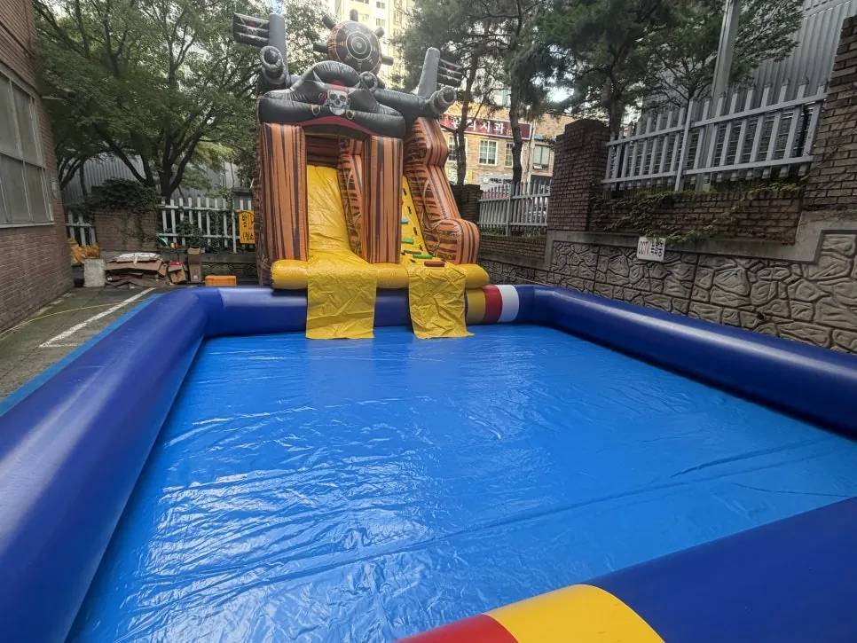

인천 행사 준비 · 2026년 11월 8일
인천 10x10 수영장 대여 — 생존수영 수업 설치 준비 체크
인천 10x10 수영장 대여는 수영장 크기보다 놓을 자리와 물을 채우고 빼는 방법을 먼저 정해야 합니다. 큰 수영장일수록 바닥이 평평하지 않거나 물 공급이 어려우면 설치 자체가 막히기 때문입니다. 인천은 경기도가 아니라 인천광역시입니다. F&J 이벤트(펀앤조이 체육교실)는 인천 학교 10x10 수영장 대여(생존수영 수업)를 진행한 기록이 있고, 이 글은 그 같은 대형 수영장을 빌릴 때 담당자가 확인할 순서를 정리했습니다.

- 큰 수영장은 먼저 자리의 평평함과 크기를 확인하고 물을 채우고 빼는 방법을 정합니다.
- 수업이 수영장 안에서 이뤄진다면 한 번에 들어가는 인원과 안전 담당 어른 수를 정해 둡니다.
- 바닥에는 미끄럼 방지 매트를 깔고, 수영장 가장자리에서 달리지 않게 합니다.
- 설치는 물놀이 시작 전에 끝내고, 철수는 배수 시간까지 계산해 일정을 잡습니다.
- 본사(화성시 비봉면)에서 경기 남부를 지나 출장으로 인천까지 갑니다.
1. 인천 10x10 수영장 대여, 어떤 때 필요할까
10x10 수영장은 작은 수영장보다 훨씬 커서 아이들이 수영장 안에서 수업을 할 수 있는 크기입니다. 인천 학교 생존수영 수업을 위해 큰 수영장이 필요했던 때 이 수영장을 대여했고, 사진으로 봐도 느껴지는 크기와 깔끔한 상태로 설치했습니다. 생존수영처럼 물속에서 움직임을 배우는 수업이나, 인원이 많은 여름 물놀이 행사처럼 작은 수영장으로는 부족한 상황에 맞습니다.
다만 크기가 큰 만큼 설치 조건이 까다롭습니다. 수영장을 빌리기로 정하기 전에 놓을 자리와 물부터 확인하세요.
| 수영장 크기 | 어울리는 상황 | 설치 때 볼 것 |
|---|---|---|
| 3x3 · 5x5 | 어린 아이들 물놀이, 소규모 | 평평한 자리 한 곳이면 충분 |
| 10x10 | 수업을 물 안에서 하거나 인원이 많은 행사 | 자리 크기, 물 채우는 시간, 배수 방법 |
2. 설치하기 전에 담당자가 확인할 것
- 자리 크기 — 수영장이 펴지는 면적뿐 아니라 주변에 사람이 다닐 폭까지 필요합니다.
- 바닥 — 평평한지, 돌 · 유리 · 날카로운 것이 없는지. 바닥이 거칠면 수영장 바닥이 상할 수 있습니다.
- 물 공급 — 수돗물을 쓸 수 있는 위치와 호스가 닿는 거리.
- 배수 — 행사가 끝난 뒤 물을 어디로 빼는지. 운동장이라면 물이 고이지 않게 흘려 보낼 방향을 봅니다.
- 날씨 — 비 · 바람이 심한 날은 설치를 미룰 수 있습니다.
이 항목은 일반적인 확인 사항입니다. 장소 사진이나 크기를 알려 주시면 설치 가능 여부를 안내해 드립니다.

3. 수영장 안에서 수업을 할 때 정할 것
물속에서 수업을 하면 아이들이 물에 닿는 시간이 길어서 인원과 시간 배분이 중요합니다. 한 번에 들어가는 인원을 정하고, 수영장 가장자리마다 어른이 서서 아이들 움직임을 봅니다. 수업 시간이 길다면 몸이 식지 않게 쉬는 시간과 몸 말리는 자리를 따로 둡니다.
- 한 번에 들어가는 인원을 정하고 반별로 시간을 나눕니다.
- 수영장 가장자리마다 어른을 두고 달리기와 장난을 막습니다.
- 물 밖에는 수건 · 갈아입을 곳 · 쉬는 자리를 마련합니다.
- 수업 전에 규칙(밀지 않기, 가장자리에서 뛰지 않기)을 한 번 말해 줍니다.
4. 바닥 매트와 안전은 수영장 주변까지
물놀이 세팅에서는 수영장 주변 바닥에 미끄럼 방지 매트를 깝니다. 물이 튀어 바닥이 젖으면 미끄러지기 쉽고, 크게 다칠 수 있기 때문입니다. 수영장 바깥도 물이 튀어 젖으니 출입구와 이동 길목에는 매트를 더 넓게 둡니다.
| 안전 항목 | 확인할 것 | 시점 |
|---|---|---|
| 미끄럼 방지 매트 | 수영장 출입구 · 이동 길목 | 설치 직후 |
| 가장자리 | 달리기 금지, 앉을 자리 정하기 | 수업 시작 전 |
| 인원 | 한 번에 들어가는 아이 수 | 수업 중 수시 |
| 날씨 | 비 · 천둥 · 강풍 예보 | 전날 · 당일 |
| 철수 | 물 빼는 시간 확보 | 일정 잡을 때 |
5. 철수와 정리까지 일정에 넣습니다

큰 수영장은 철수에도 시간이 걸립니다. 물을 빼고 수영장을 접어 정리하려면 행사가 끝난 뒤에도 일정이 남습니다. 수업이나 행사가 끝나는 시각과 건물 사용 마감 시각을 알려 주시면 일정을 맞춥니다.
인천은 본사(화성시 비봉면)에서 경기 남부를 지나 출장으로 가는 지역입니다. 날짜와 장소, 인원을 알려 주시면 수영장 크기와 슬라이드 구성을 정리해 드립니다. 행사 · 대여 에서 수영장과 워터슬라이드를 볼 수 있고, 견적 문의 로 요청하세요.
작은 수영장과 분수터널 구성이 궁금하다면 동탄 유치원 물놀이 행사 준비 글을 참고하세요.
자주 묻는 질문
수영장 설치와 철수까지 해 주나요?
네. 수영장은 설치와 철수까지 하는 대여가 가능합니다. 진행 인력이 필요하면 함께 구성합니다.
물은 어떻게 채우나요?
물을 쓸 수 있는 위치와 호스가 닿는 거리를 장소에서 먼저 확인합니다. 장소 사진이나 위치를 알려 주세요.
생존수영 수업도 맡아 주나요?
F&J 이벤트는 인천 학교 생존수영 수업에 쓸 수영장을 대여했습니다. 수업 내용과 강사는 학교에서 정하는 것으로 보시고, 필요한 지원 범위는 상담 때 알려 주세요.